Programming for Data Manipulation and Scraping
← Use arrow keys →
Day 2 schedule:
1. Review homework
2. Working with data + files
3. Using RubyGems
4. Scraping
Homework Presentations
Back to our classroom code
Let's say the principal wants us to keep data for which students are in which classes
JSON
(JavaScript Object Notation)
# 7_roll_call.rb
require 'json'
require 'faker'
require './6_registrar_final'
(0.upto(24)).each do |i|
s = Student.new(Faker::Name.name, 8)
s.assign_teacher
end
File.open("./roll_call.json", "w") do |f|
f.write Student.roll_call.to_json
end
roll_call.json
{
"Shanahan": ["Vernice Price", "Clovis Flatley", "Raegan Boehm", "Clara Kemmer", "Willis Abernathy"],
"Kovacek": ["Dorcas Kuhlman", "Deven Monahan", "Linda Sawayn", "Veda Blick IV", "Adolphus Terry"],
"Streich": ["Dylan Keebler IV", "Giuseppe Veum Jr.", "Pearlie Schaefer", "Kaden Kautzer Sr.", "Ms. Adam Grady"],
"Ankunding": ["Miss Darion Herman", "Mrs. Annabel Witting", "Vivienne Carter", "Rhoda Bechtelar", "Mattie Goodwin MD"],
"Marks": ["Nickolas Schoen V", "Eldora Smitham", "Helen Kshlerin", "Josefa Fritsch", "Leslie Miller"]
}
How is this useful?
Every programming language is equipped to read/write JSON
Try pasting it into your browser console
How do we read it back in?
require 'json'
roll = JSON.parse(File.open("roll_call.json").read)
=> {"Shanahan"=>["Vernice Price", "Clovis Flatley", "Raegan Boehm"...
roll["Shanahan"]
=> ["Vernice Price", "Clovis Flatley", "Raegan Boehm", "Clara Kemmer", "Willis Abernathy"]
RubyGems are bits of code that add functionality to Ruby
RestClient is a "gem" to get and post URLs
$ gem install rest-client
require 'rest-client'
RestClient.get("http://google.com")
=> "<!doctype html><html itemscope=\"\" itemtype...
Most APIs use JSON to exchange data
ProPublica Campaign Finance API
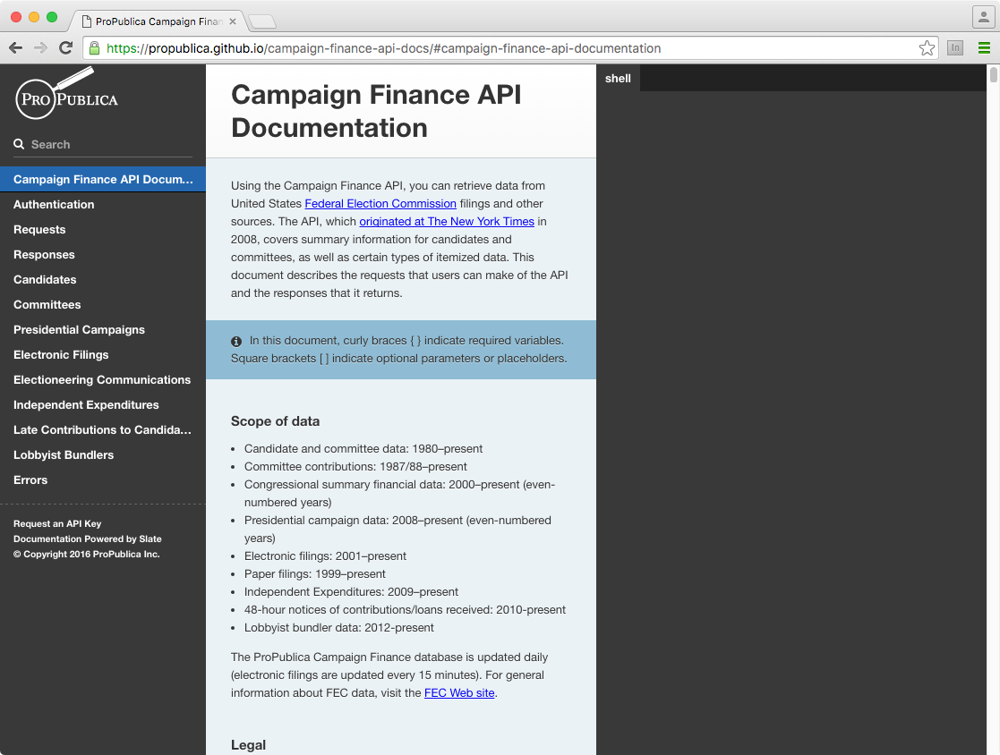
Let's look for Bernie Sanders' contributions
http://fec.gov/finance/disclosure/efile_search.shtml
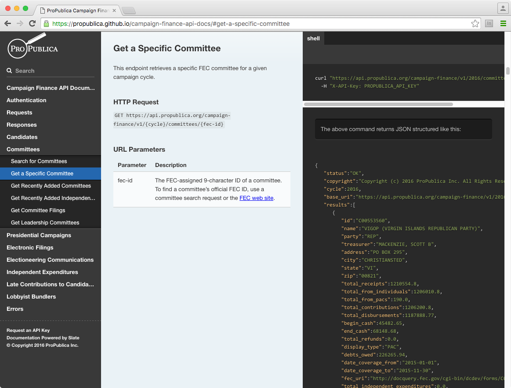
Copy this key for now:
qQ6CXg1UQg1xJ7gNXvXZW9qeE99QNAOY2Sn3TKw2
Fill in the pattern
https://api.propublica.org/campaign-finance/v1/2016/committees/C00577130.json
require 'rest-client'
url = "https://api.propublica.org/campaign-finance/v1/2016/committees/C00577130.json"
key = "qQ6CXg1UQg1xJ7gNXvXZW9qeE99QNAOY2Sn3TKw2"
resp = RestClient.get(url, {"X-API-Key" => key})
=> "{\"status\":\"OK\",\"copyright\":\"Copyright (c) 2016 ProPublica Inc....
data = JSON.parse(resp)
=> {"status"=>"OK", "copyright"=>"Copyright (c) 2016 ProPublica Inc. All Rights Reserved." ...
# pp "pretty prints" hashes
require 'pp'
pp data
{"status"=>"OK",
"copyright"=>"Copyright (c) 2016 ProPublica Inc. All Rights Reserved.",
"cycle"=>2016,
"base_uri"=>"https://api.propublica.org/campaign-finance/v1/2016/",
"results"=>
[{"id"=>"C00577130",
"name"=>"BERNIE 2016",
"party"=>"DEM",
...
data['results'][0]['total_contributions']
=> 182846078.87
Let's say we want to grab Hillary, Bernie and Trump contributions and disubursements, and stash them in a spreadsheet
Remember, spreadsheets are just comma separated files with a header row
# 8_campaign_contributions.rb
require 'rest-client'
require 'json'
KEY = "qQ6CXg1UQg1xJ7gNXvXZW9qeE99QNAOY2Sn3TKw2"
# bernie, hillary, trump
# look up IDs here: http://fec.gov/finance/disclosure/efile_search.shtml
committees = ["C00577130", "C00575795", "C00580100"]
out = "committee_id,total_contributions,total_disbursements\n"
def url(committee_id)
"https://api.propublica.org/campaign-finance/v1/2016/committees/#{committee_id}.json"
end
committees.each do |c|
resp = RestClient.get(url(c), {"X-API-Key" => KEY})
data = JSON.parse(resp)
contributions = data['results'][0]['total_contributions']
disbursements = data['results'][0]['total_disbursements']
out << "#{c},#{contributions},#{disbursements}\n"
end
File.open("campfin.csv", "w") do |f|
f.write out
end
campfin.csv
committee_id,total_contributions,total_disbursements
C00577130,182846078.87,168314350.27
C00575795,169552497.08,157763659.51
C00580100,12562427.5,47185423.71
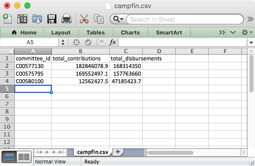
Remember our classroom JSON? Let's put that into a spreadsheet
This is a little trickier because we want to store the students in columns under a teacher name header
# reminder
require 'json'
data = JSON.parse(File.open("roll_call.json").read)
data.keys
=> ["Shanahan", "Kovacek", "Streich", "Ankunding", "Marks"]
data.values
=> [["Vernice Price", "Clovis Flatley", "Raegan Boehm", "Clara Kemmer", "Willis Abernathy"], ...]
# 9_classroom_sheet.rb
require 'json'
data = JSON.parse(File.open("roll_call.json").read)
out = ""
# first let's loop through all of the teachers
# to put them in the header row
out << data.keys.join(",") + "\n"
# let's transform the array of arrays from
# [class1student1, class1student2, class1student3],...
# to
# [class1student1, class2student1, class3student1],..
# normally this would be hard, but
# Ruby can do this for us with Array#transpose
column_classrooms = data.values.transpose
# now we just need to stick them in the sheet
column_classrooms.each do |cc|
out << cc.join(",") + "\n"
end
File.open("roll_call.csv", "w") do |f|
f.write out
end
roll_call.csv
Shanahan,Kovacek,Streich,Ankunding,Marks
Vernice Price,Dorcas Kuhlman,Dylan Keebler IV,Miss Darion Herman,Nickolas Schoen V
Clovis Flatley,Deven Monahan,Giuseppe Veum Jr.,Mrs. Annabel Witting,Eldora Smitham
Raegan Boehm,Linda Sawayn,Pearlie Schaefer,Vivienne Carter,Helen Kshlerin
Clara Kemmer,Veda Blick IV,Kaden Kautzer Sr.,Rhoda Bechtelar,Josefa Fritsch
Willis Abernathy,Adolphus Terry,Ms. Adam Grady,Mattie Goodwin MD,Leslie Miller
Putting it together: Let's write a class to take any n committee IDs and write the data out to a spreadsheet
# 10_committee_sheet.rb
require 'rest-client'
require 'json'
KEY = "qQ6CXg1UQg1xJ7gNXvXZW9qeE99QNAOY2Sn3TKw2"
class CommitteeSheet
def initialize(committees)
# array like ["C00577130", "C00575795", "C00580100"]
@committees = committees
@out = "committee_id,total_contributions,total_disbursements\n"
end
def url(committee_id)
"https://api.propublica.org/campaign-finance/v1/2016/committees/#{committee_id}.json"
end
def build
@committees.each do |c|
resp = RestClient.get(url(c), {"X-API-Key" => KEY})
data = JSON.parse(resp)
contributions = data['results'][0]['total_contributions']
disbursements = data['results'][0]['total_disbursements']
@out << "#{c},#{contributions},#{disbursements}\n"
end
end
def write
File.open("committees.csv", "w") do |f|
f.write out
end
end
end
require './10_committee_sheet'
cs = CommitteeSheet.new(["C00577130", "C00575795", "C00580100"])
cs.build
cs.write
Another trick
if __FILE__ == $0
cs = CommitteeSheet.new(["C00577130", "C00575795", "C00580100"])
cs.build
cs.write
end
$ ruby 10_committee_sheet.rb
We can also pass in the committee IDs from the command line
if __FILE__ == $0
cs = CommitteeSheet.new(ARGV)
cs.build
cs.write
end
$ ruby 10_committee_sheet.rb C00577130 C00575795 C00580100
Some APIs Return Data in XML
require 'crack'
require 'rest-client'
url = "https://api.propublica.org/campaign-finance/v1/2016/committees/C00577130.xml"
key = "qQ6CXg1UQg1xJ7gNXvXZW9qeE99QNAOY2Sn3TKw2"
resp = RestClient.get(url, {"X-API-Key" => key})
=> "<?xml version=\"1.0\"?>\n<result_set>\n <status>OK</status>\n...
data = Crack::XML.parse(resp)
=> {"result_set"=>{"status"=>"OK", "copyright"=>"Copyright (c) 2016 ProPublica Inc. ...
Look familiar?
NB: Some APIs require authentication
On Your Own: Grab some data from an API, collect it in a spreadsheet
API examples
Some of these require you to sign up for keys
PP Congress API https://goo.gl/ZPVoFA
Google Books API https://goo.gl/S7Lff6
Wikipedia API https://goo.gl/qcec2x
Giphy API https://goo.gl/FMZgaX
Flickr search https://goo.gl/oU2z9w
Capitol Words http://goo.gl/o3aP9w
EPA Envirofacts https://goo.gl/mVlny9
USGS Earthquakes http://goo.gl/2CQT0M
Brooklyn Museum https://goo.gl/BMLd6E
HuffPo Pollster http://goo.gl/mY5EaZ
Dark Sky https://goo.gl/h9FI4A
iTunes search https://goo.gl/U0aRIq
Spotify https://goo.gl/fIfgPd
Zillow http://goo.gl/C34lar
Part 2. What is web scraping?
We'll use what we learned with APIs to grab web resources that aren't designed to be read by computers
Aside: Before you scrape
http://j.mp/la-results
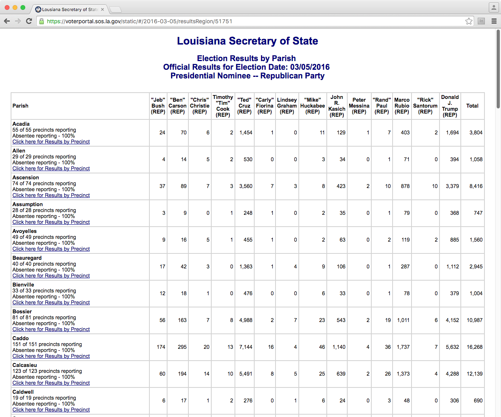
http://j.mp/la-results
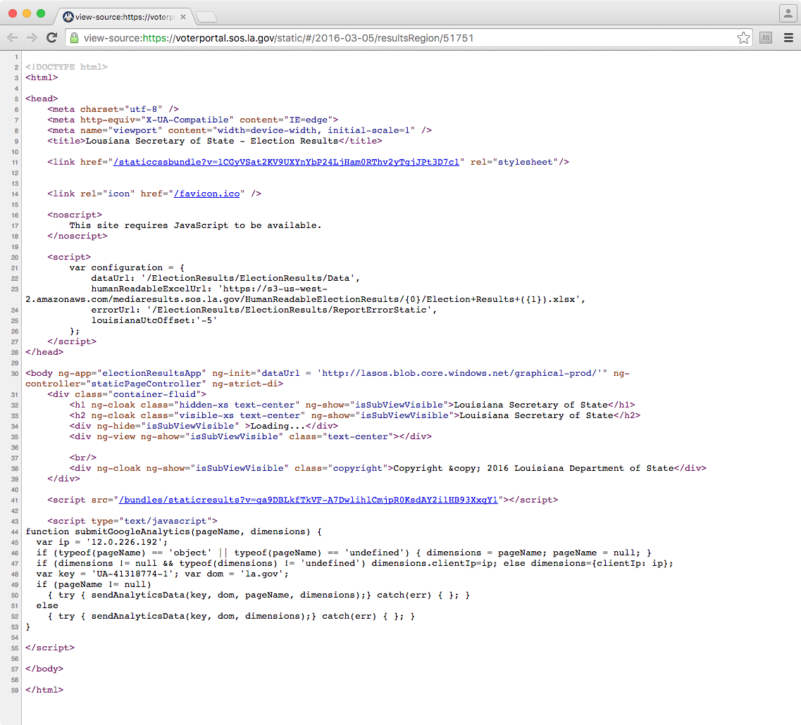
Web inspector
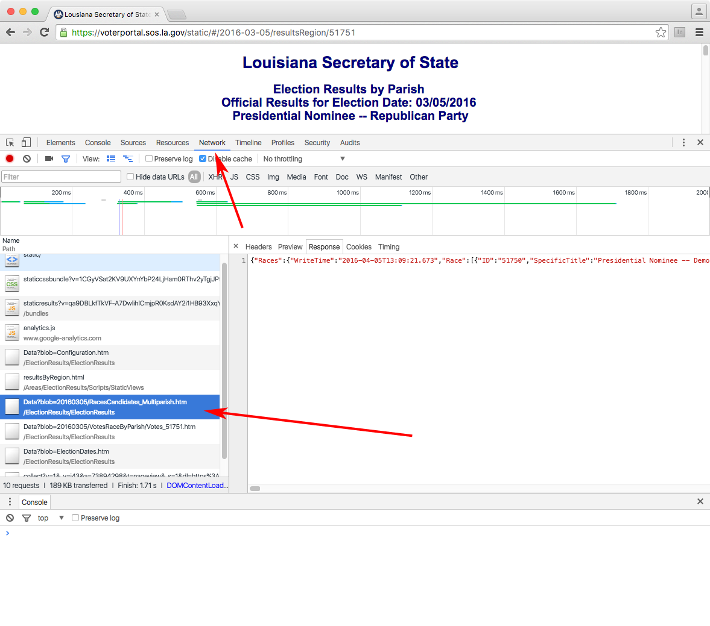
...
}, {
"ID": "51751",
"SpecificTitle": "Presidential Nominee -- Republican Party",
"GeneralTitle": "Republican Presidential Nominee",
"OfficeLevel": "060",
"IsMultiParish": "1",
"NumberToBeElected": "1",
"SummaryText": null,
"FullText": null,
"IsClosedParty": "1",
"Choice": [{
"Color": "0x8970cb",
"ID": "99554",
"Desc": "\"Jeb\" Bush (REP)"
}, {
...
{
"Parishes": {
"VersionDateTime": "1900-01-01T00:00:00",
"Parish": [{
"ParishValue": "01",
"PrecinctsReporting": "55",
"PrecinctsExpected": "55",
"NumAbsenteeReporting": "1",
"NumAbsenteeExpected": "1",
"VoterCountQualified": "10466",
"VoterCountVoted": "3581",
"Choice": [{
"ID": "99554",
"VoteTotal": "24",
"Outcome": "Defeated"
}, {
...
Scraping Tools: RestClient + Nokogiri
require 'rest-client'
require 'nokogiri'
resp = Nokogiri::HTML(RestClient.get("http://google.com"))
=> #<Nokogiri::HTML::Document:0x3fda3aace8fc
name="document" children=[#<Nokogiri::XML::DTD:0x3fda3aace5a0 name="html">...
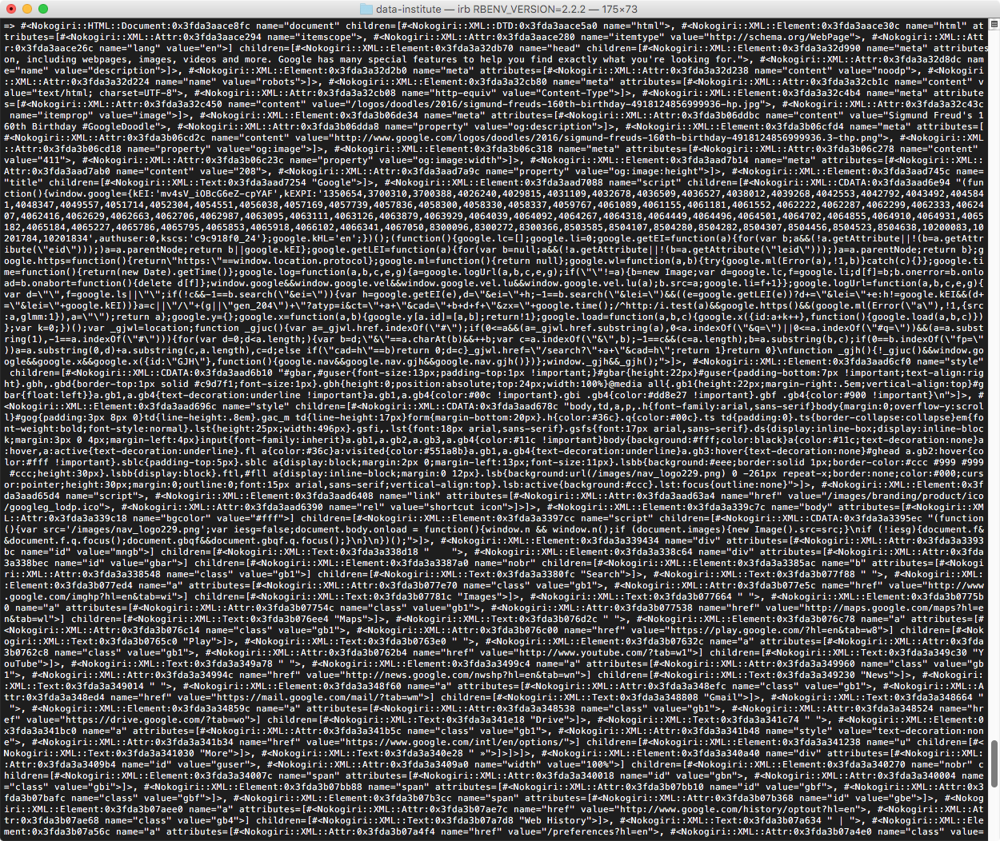
It's not that bad!
http://goo.gl/SVQsko
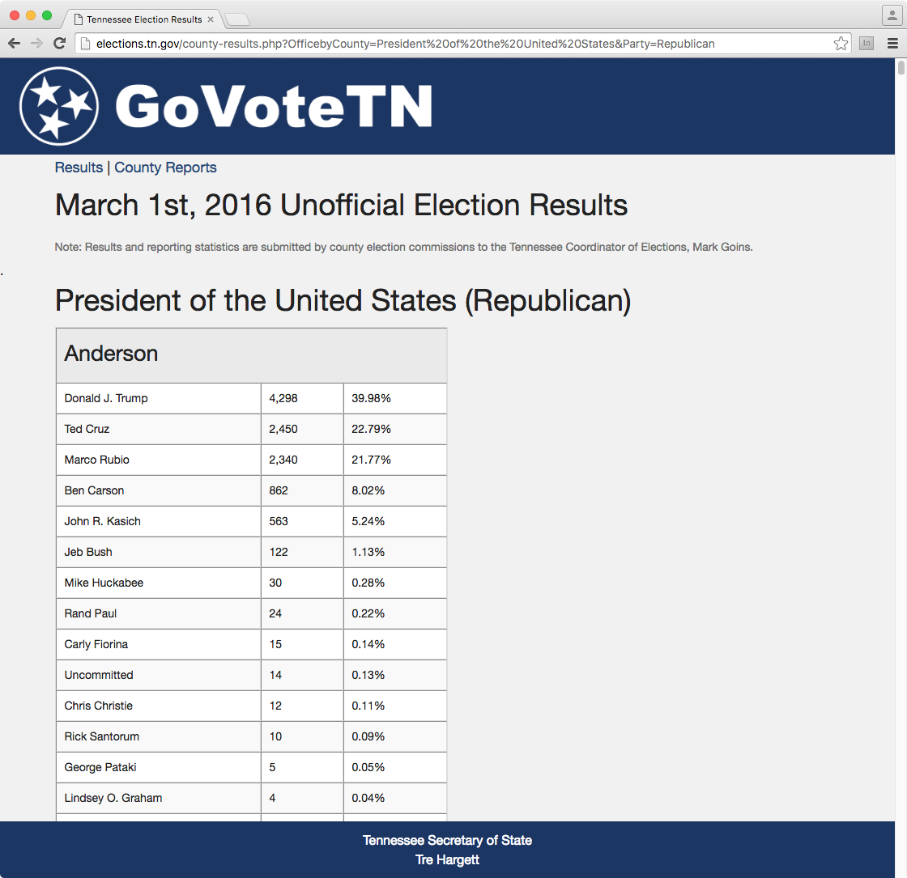
require 'rest-client'
require 'nokogiri'
page = "http://goo.gl/SVQsko"
doc = Nokogiri::HTML(RestClient.get(page))
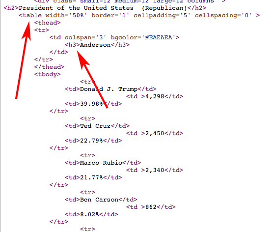
doc.css("table")
=> ...
doc.css("table").length
=> 96
# get the county name
doc.css("table")[0]
=> ...
doc.css("table")[0].css("h3")
=> ...
doc.css("table")[0].css("h3").text
=> "Anderson"
doc.css("table")[0].css("tbody")[0].css("tr")[0].css("td")[0].text
=> "Donald J. Trump"
# do it for the whole table
doc.css("table")[0].css("tbody").map do |q|
q.css("tr").map do |q|
q.css("td").map do |q|
q.text
end
end
end
=> [[["Donald J. Trump", "4,298", "39.98%"], ...
# let's get this into a format like:
# cand1 cand2 cand3
# county1 votes votes votes
# county2 votes votes votes
# county3 votes votes votes
Step 1: Convert to JSON
Step 2: Convert to CSV
# 11_tn_elections_step1.rb
require 'rest-client'
require 'nokogiri'
require 'pp'
url = "http://goo.gl/SVQsko"
doc = Nokogiri::HTML(RestClient.get(url))
clean = {}
# each table is a county
doc.css("table").each do |table|
cty_name = table.css("h3").text
ary = table.css("tr").map do |row|
row.css("td").map do |cell|
cell.text
end
end
cty = {}
ary.each do |cells|
# cells[0] is candidate name
# cells[1] is votes
cty[cells[0]] = cells[1]
end
clean[cty_name] = cty
end
pp clean
{"Anderson"=>
{"\n Anderson\n "=>nil,
"Donald J. Trump"=>"4,298",
"Ted Cruz"=>"2,450",
"Marco Rubio"=>"2,340",
"Ben Carson"=>"862",
"John R. Kasich"=>"563",
"Jeb Bush"=>"122",
"Mike Huckabee"=>"30",
"Rand Paul"=>"24",
"Carly Fiorina"=>"15",
"Uncommitted"=>"14",
"Chris Christie"=>"12",
"Rick Santorum"=>"10",
"George Pataki"=>"5",
"Lindsey O. Graham"=>"4",
"Jim Gilmore"=>"2"}
...
}
# 12_tn_elections_step2.rb
require 'rest-client'
require 'nokogiri'
require 'pp'
url = "http://goo.gl/SVQsko"
doc = Nokogiri::HTML(RestClient.get(url))
clean = {}
# each table is a county
doc.css("table").each do |table|
cty_name = table.css("h3").text
ary = table.css("tbody").css("tr").map do |row|
row.css("td").map do |cell|
cell.text
end
end
cty = {}
ary.each do |cells|
# cells[0] is candidate name
# cells[1] is votes
cty[cells[0]] = cells[1].gsub(/[^\d]/,"").to_i
end
clean[cty_name] = cty
end
pp clean
{"Anderson"=>
{"Donald J. Trump"=>4298,
"Ted Cruz"=>2450,
"Marco Rubio"=>2340,
"Ben Carson"=>862,
"John R. Kasich"=>563,
"Jeb Bush"=>122,
"Mike Huckabee"=>30,
"Rand Paul"=>24,
"Carly Fiorina"=>15,
"Uncommitted"=>14,
"Chris Christie"=>12,
"Rick Santorum"=>10,
"George Pataki"=>5,
"Lindsey O. Graham"=>4,
"Jim Gilmore"=>2},
...
}
# 13_tn_elections_step3.rb
# everyting from exercise 12, plus ...
# first line is the candidates row
# let's assume all candidates are on the
# ballot in all counties and grab them
# from the first county
# make sure to leave a field for the
# county column
csv = "county," + clean.values[0].keys.sort.join(",") + "\n"
# iterate through the counties and add to the sheet
clean.each do |name, cands|
row = "#{name},"
# iterate through the cands by key
# in order to keep them in alpha order
cands.keys.sort.each_with_index do |key, idx|
row << cands[key].to_s
if idx < cands.keys.length - 1
row << ","
end
end
row << "\n"
csv << row
end
File.open("tn_results.csv", "w") do |f|
f.write csv
end
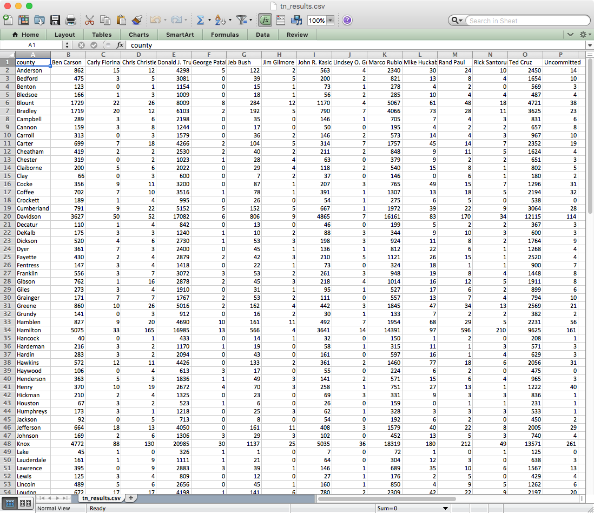
We'll do one more together
https://goo.gl/evoIpq
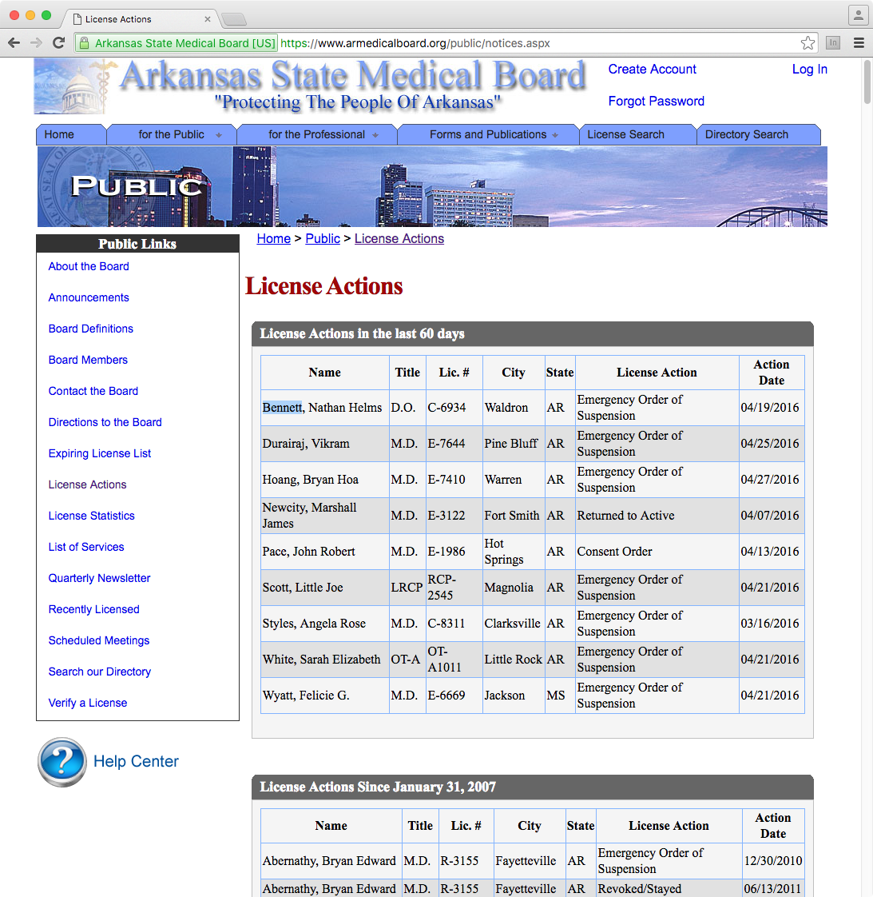
https://goo.gl/evoIpq
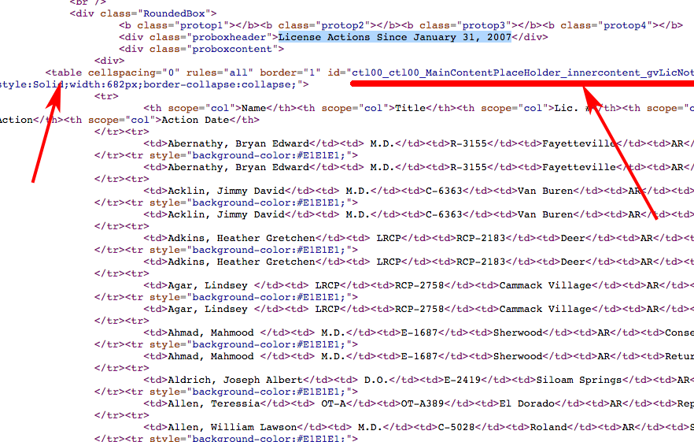
When you luck out
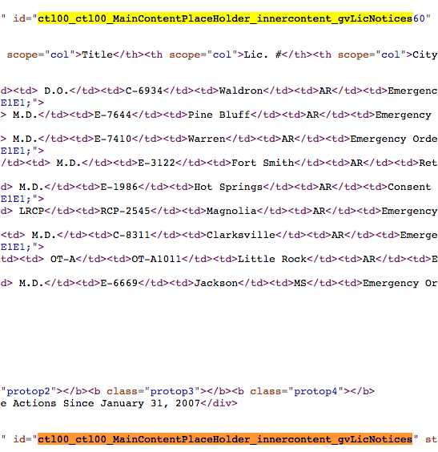
doc = Nokogiri::HTML(RestClient.get("https://goo.gl/evoIpq"))
doc.css("#ctl00_ctl00_MainContentPlaceHolder_innercontent_gvLicNotices")
It's already tabular!
# 14_ar_medboard.rb
require 'nokogiri'
require 'rest-client'
doc = Nokogiri::HTML(RestClient.get("https://goo.gl/evoIpq"))
table = doc.css("#ctl00_ctl00_MainContentPlaceHolder_innercontent_gvLicNotices")
out = ""
out << table.css("th").map(&:text).join(",") + "\n"
table.css("tr")[1..-1].each do |row|
out << row.css("td").map(&:text).join(",") + "\n"
end
File.open("ar_medboard.csv", "w") {|f| f.write out }
Be careful
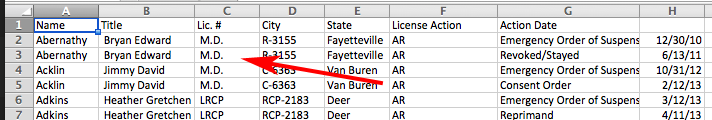
# 15_ar_medboard_fixed.rb
require 'nokogiri'
require 'rest-client'
doc = Nokogiri::HTML(RestClient.get("https://goo.gl/evoIpq"))
table = doc.css("#ctl00_ctl00_MainContentPlaceHolder_innercontent_gvLicNotices")
out = ""
out << '"' + table.css("th").map(&:text).join('","') + '"' + "\n"
table.css("tr")[1..-1].each do |row|
out << '"' + row.css("td").map(&:text).join('","') + '"' + "\n"
end
File.open("ar_medboard.csv", "w") {|f| f.write out }
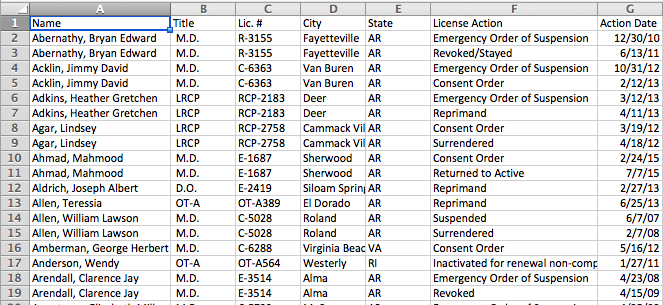
A few other considerations:
Nontabular sitesJavaScript sites
FormsSessions
Anti-scraping measures
TK examples for some of these
On Your Own: Scrape a site
Homework: Finish your scraper if you didn't already
Al Shaw ProPublica Data Institute • 2016 @A_L